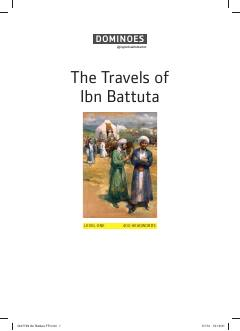

TTIbn Battuta sayohatlari asosida ingliz tilini o'rganish uchun soddalashtirilgan moslashgan kitob.
Ushbu kitob mashhur sayohatchi Ibn Battuta sarguzashtlariga bag'ishlangan bo'lib, ingliz tilini o'rganuvchilar uchun maxsus soddalashtirilgan tarzda tuzilgan. Asar o'quvchilarga qiziqarli tarixiy voqealar orqali til ko'nikmalarini oshirish imkonini beradi.